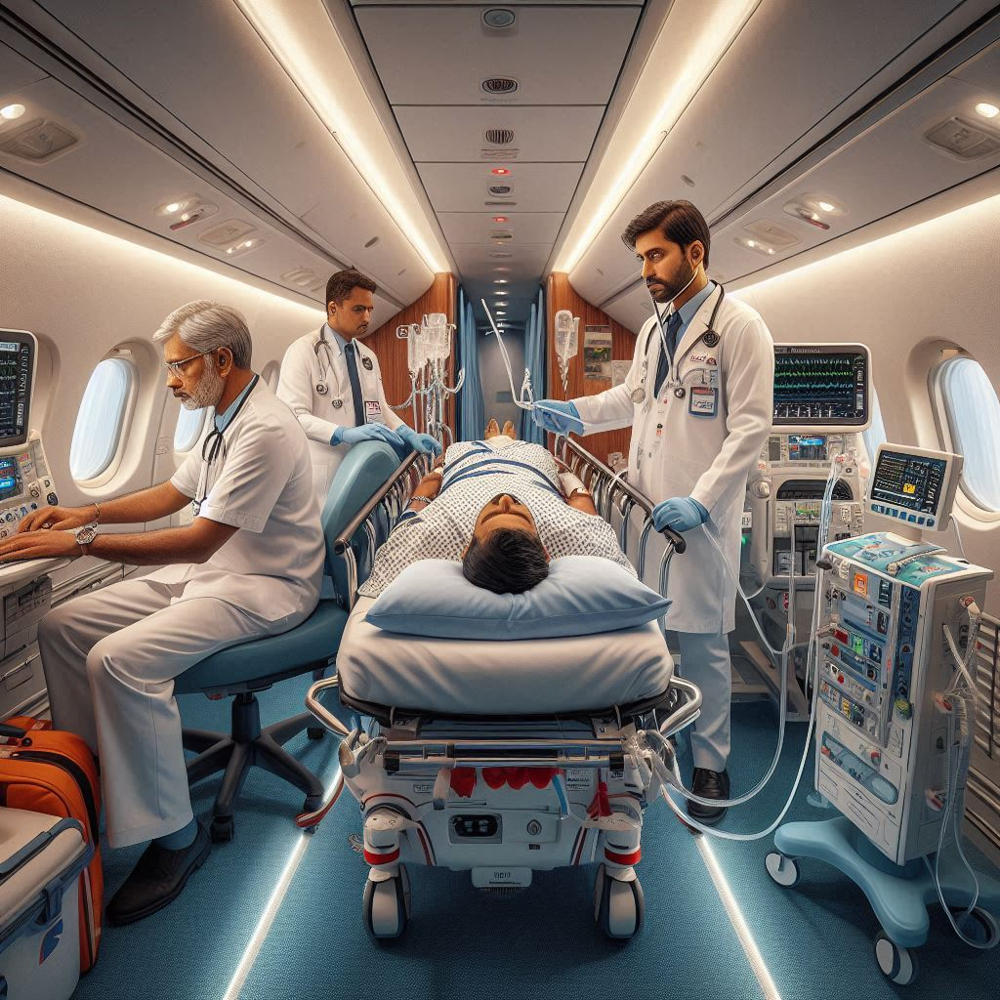
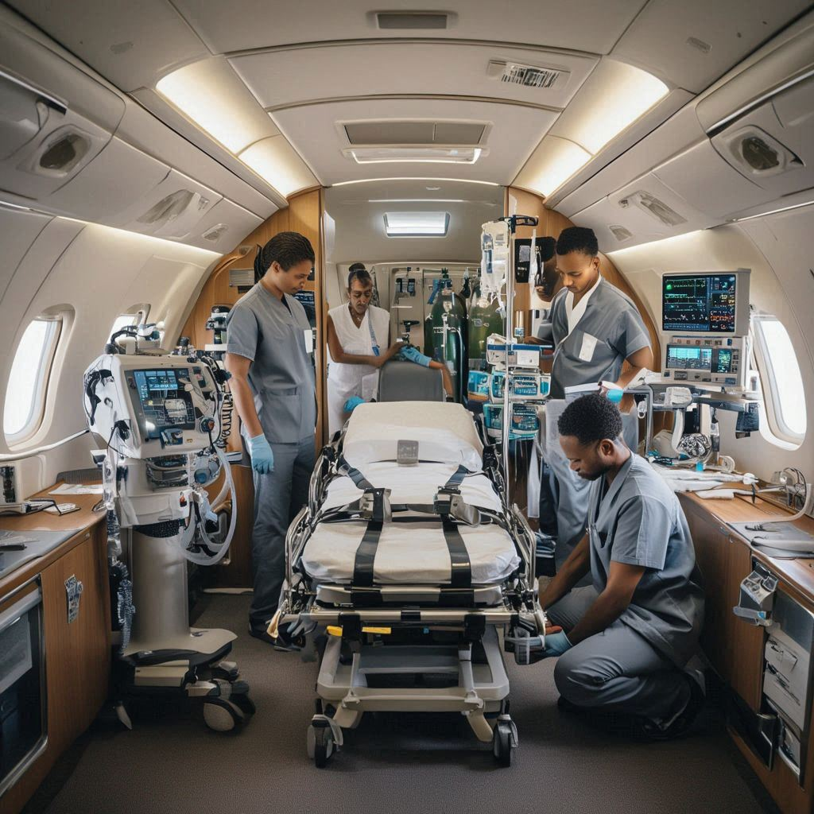

01
🩺
Critical Patient Assessment
Our intensivists evaluate the patient’s condition, current ICU requirements, and stability for air transport.
ICU on Air transforms an aircraft into a fully functional intensive care unit, delivering continuous, hospital-grade critical care while the patient is airborne.
The aircraft is fully configured to operate as a complete intensive care unit in the sky.
Designed for critically ill, clinically unstable, or life-support-dependent patients who need uninterrupted supervision.
ICU on Air is a highly specialized medical transport service where the aircraft is fully configured to operate as a complete intensive care unit in the sky. It is designed for patients who are critically ill, clinically unstable, or dependent on advanced life-support systems that require continuous monitoring and expert medical supervision throughout the journey.
From advanced ventilator support and invasive hemodynamic monitoring to emergency medication administration and real-time patient assessment, every aspect of critical care continues seamlessly during the flight. This ensures there is no interruption in treatment standards, allowing patients to be transported safely and efficiently without compromising medical outcomes.

Our ICU on Air configuration includes advanced ventilators, multi-parameter cardiac monitors, defibrillators, infusion pumps, oxygen management systems, and emergency airway equipment — identical to those used in modern hospital intensive care units.
A carefully coordinated critical care workflow ensures the patient receives uninterrupted ICU-level support from departure to arrival.
Our intensivists evaluate the patient’s condition, current ICU requirements, and stability for air transport.
The aircraft is equipped with patient-specific life-support systems, medications, and monitoring devices.

Seamless coordination between referring and receiving hospitals ensures continuity of medical care.
Continuous monitoring, interventions, and emergency management are handled by a specialized ICU medical team.
Upon arrival, the patient is transferred directly to the ICU with full clinical documentation and briefing.
ICU on Air ensures that critically ill patients receive uninterrupted, expert medical care even while traveling long distances.
Ventilation, monitoring, and medication delivery continue without interruption during flight.
Flights are staffed with intensivists, critical care nurses, and paramedics trained for airborne emergencies.
Suitable for patients with severe trauma, cardiac instability, or respiratory failure.
Every critical parameter is observed continuously so the team can respond immediately to any change in patient condition.
Redundant power systems and backup equipment help maintain uninterrupted ICU support even during extended missions.
The onboard environment is designed to support safe long-distance movement without interrupting treatment quality.
ICU on Air is used when critically ill patients require advanced airborne intensive care without interruption in treatment standards.
Patients who require mechanical ventilation and close respiratory monitoring during transfer.
Ideal for patients with complex medical needs requiring advanced ICU-level interventions.
Suitable for both urgent evacuations and scheduled ICU relocations.
Capable of supporting in-flight procedures such as dialysis, advanced airway management, and invasive monitoring.
Our team coordinates ICU-level patient transfers with advanced onboard support, specialist staffing, and hospital-to-hospital continuity of care.